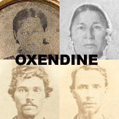
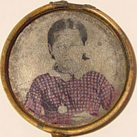
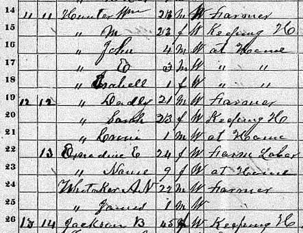

| |
|  |
Nancy Jane Hunter
Lumbee American Indians |
Born: November 25, 1862
Died: April 23, 1916 TN 9:50 PM, Easter.
Buried: April 24 1916 Fayetteville, TN
|  | For a long time Nancy Jane was a great mystery in our line, but DNA testing has finally cleared everything up. We know she is definitely the girl in the tintype to the left, and we know that she was the daughter of Elizabeth Oxendine. |
1870 CENSUS

Elizabeth Oxendine lived in the same household as John Dudley Hunter, his wife Sarah and child in 1870. At the time, Elizabeth was a single mom and had her daughter, Nanie living with her. There was also a worker named A.N. Whitaker living in the house, with a son, James, aged 1.
Soon, John Dudley's wife and child died. John Dudley then married Elizabeth Oxendine in 1871, when daughter Nanie was 10. They apparently claimed both Nancy and James as their own children. James is in fact buried with them, with the stones reading "mother", "father" and "son". Elizabeth and John Dudley Hunter went on to have 4 more children after they were married. So their extended family included 6 kids total.
From Ronnie - "Here's an 1870 clip (Lincoln County, Tennessee) with the brothers William and John Dudley Hunter and their families. John Dudley is living with his first wife, but also his wife-to-be Elizabeth is living under the same roof. And who is this daughter of Elizabeth's? Looks like "Nanie"??? To further confuse it, there is in the same house James Whitaker, age 1. This looks like the James that we have as child of Elizabeth and John Dudley, born January 1, 1870, according to your dad."
While we have proven beyond doubt that Elizabeth is Nancy's "real" mother, we haven't yet proven that John Dudley was Nancy's "real" father. Letters refer to him as the "father", but they may have meant "adoptive father". Ora Belle Smith (my great-grandmother; Nancy Jane's daughter) said that John Dudley Hunter was indeed Nancy Jane's father. She wrote a letter on Oct 1956 sying "Around Christmas of 1862 Nancy Jane, then a small baby, her parents Dudley Hunter and wife Elizabeth Oxendine Hunter, with Dudley's brother William and their mother Zilla Jackson, came to Lincoln County from Putnam County, Tennessee."
In conversations between Ora Warren and Newman Dudley Hunter and Lossie Hunter Hall (children of John Dudley's brother, William), the two kids told Ora "Nancy Jane Hunter was the first child of Dudley Hunter and Elizabeth Oxendine Hunter".
Lila Mae Hunter, the widow of Joe E Hunter (son of John Dudley Hunter) wrote on Aug 30 1963, "Nancy Jane Hunter Smith was the oldest child of Dudley Hunter."
ARGUMENTS AGAINST HUNTER BEING THE FATHER
Nancy Jane's oldest child was Dr. William T Smith. He wrote Jane Waller a letter on Apr 16 1957 - "I can remember great grandmother Jackson (Zilla), she was the mother of Dud Hunter, our step-grandfather. Know nothing of our Grandfather Hunter ... we called Dud Hunter, our Step Grandfather, Uncle Dud. Why I have no idea."
This would imply that Nancy Jane had a *different* father and that Dudley merely adopted her when he married Elizabeth.
John Dudley Hunter was born on Feb 2 1849, according to the Oklahoma Board of Health. So he would have been just over age 13 when Nancy Jane was conceived in 1862. Elizabeth was 22 - was it a wild teen romance? In any case, John Dudley Hunter and Elizabeth Oxendine married on August 28, 1871, when Nancy Jane was 8 years, 9 months old. The family moving from Harper's Branch in Lincoln County TN to Giles County TN.
Nancy Jane married Robert Pleasant Smith on December 17, 1879 when she was 17. The couple had several children including Ora Belle Smith, in my line. Nancy Jane died in 1916, before either of her parents.
CONFUSING DOCUMENTS
When Nancy Jane died, her husband, Robert Pleasant Smith, claimed on the death certificate that *Mary Anne Hunter* was Nancy Jane's mother. We have definitely proven through DNA testing that Nancy Jane was the daughter of Elizabeth Oxendine. Elizabeth definitely married John Dudley Hunter and they raised Nancy Jane. This is well known. Elizabeth and JD are buried together. Now, Nancy Jane died in 1916 - BEFORE her mom Elizabeth died in 1917 and "dad" JD died in 1930. So it's not even like the parents were't around. It's very odd that he put this down; maybe he was confused?
DNA TESTING RESULTS
We did DNA testing to compare a child of the Elizabeth Oxendine line to a child of the Ailsey Jane Oxendine line. Both of these women were sisters. We did in fact find the line compared properly, meaning both had a common mother - and meaning that the current line on our site IS descended from Elizabeth Oxendine through Nancy Jane Hunter. Details on the mtDNA Research
From here, we move into known current relatives that were alive within our lifetime. For example, my great-grandmother Ora Belle was alive in the early 70s when I was an infant. I called her "Mamaw".
Main Page for Oxendine Research
Sitemap of All Research on Oxendines
Lisa Shea Homepage | Advertising Info | Low Carb Recipes | Sangria Recipes | Travelogues | Game Walkthroughs
All content copyright © 2006 Minerva WebWorks LLC. All rights reserved.
You MUST GET WRITTEN PERMISSION to reprint or republish any of this material.
Adventures Online - Massachusetts Web Design
| |